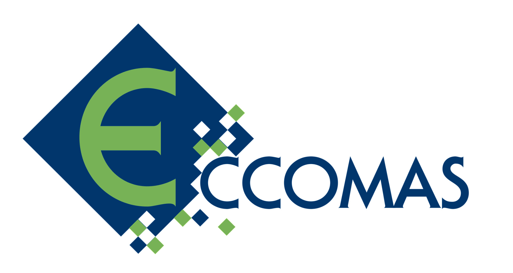

La Sociedad Española de Matemática Aplicada (SEMA), consciente de la necesidad de promover el interés de las jóvenes generaciones por la tarea de la creación científica, convoca el XXVI Premio SEMA «Antonio Valle» al Joven Investigador.
La convocatoria continúa una tradición, habitual tanto en las Artes como en las Ciencias, que contribuye a incrementar el papel positivo que el aprecio de la comunidad tiene en la vida científica de los investigadores, al tiempo que promueve y estimula el desarrollo en nuestro país de las Matemáticas y sus aplicaciones.
La Sociedad Española de Matemática Aplicada convoca el Premio SEMA «Antonio Valle» al Joven Investigador, que se concederá anualmente.
Son posibles candidatos todos los investigadores españoles que, a la fecha del límite de presentación de candidaturas, no rebasen la edad de 33 años.
En caso de bajas por maternidad, se aplicará una ampliación de esta edad en un año por cada hijo/a. En el caso de bajas por paternidad, accidente o enfermedad, se ampliará el plazo en un periodo igual al de la interrupción, redondeándolo al alza por meses completos.
También pueden ser candidatos aquellos investigadores de otras nacionalidades que tengan un puesto de trabajo permanente en una Universidad o Centro de investigación español y cumplan la condición de edad. No pueden concurrir al Premio candidatos galardonados en convocatorias precedentes.
El Premio está destinado a promover la excelencia en el trabajo matemático original en todas las ramas de las Matemáticas que tienen una componente aplicada. Con el límite de edad fijado se pretende que los solicitantes hayan tenido tiempo de desarrollar su creatividad matemática de manera independiente, tras la etapa formativa correspondiente a la Tesis Doctoral. El Premio tiene por objetivo reconocer las capacidades demostradas y la contribución personal de nuestros/as jóvenes investigadores/as, al tiempo que contribuir a abrirles el camino en su periodo de madurez.
Los méritos serán juzgados por un Comité Científico de cinco miembros, nombrado por el Consejo Ejecutivo de la Sociedad entre investigadores de probado prestigio. Este Comité tendrá su propio reglamento de funcionamiento. En todo caso, será presidido por el Presidente de la SEMA o persona en quien delegue, no pudiendo ser miembros del Comité Científico más de dos miembros del Consejo Ejecutivo.
Los/las solicitantes habrán de presentar, dentro del plazo que se cite, una Memoria exponiendo su trayectoria científica y los méritos que concurren, un currículum normalizado, así como otros documentos que puedan ser pertinentes para acreditar sus contribuciones originales a las Matemáticas y sus aplicaciones. Las candidaturas pueden ser presentadas también por otros investigadores. El Comité se reserva el derecho de recabar la información complementaria necesaria del candidato/a o de quien le haya presentado.
La persona galardonada con el Premio recibirá de la Sociedad un Diploma acreditativo y una cuantía que será establecida en cada convocatoria por la Sociedad.
La persona galardonada con el Premio se compromete a enviar al Presidente de SEMA, en un plazo máximo de seis meses a contar desde la fecha de entrega del premio, un artículo de investigación original o un resumen de su trabajo de investigación escrito con formato de artículo científico, con una extensión mínima de 15 páginas, que podrá ser publicado en el SEMA Journal tras el proceso de revisión reglamentado.
El fallo del concurso es irrevocable. El Comité acompañará la concesión del Premio de una exposición de los méritos hallados en la persona galardonada. Por lo demás, las deliberaciones y resoluciones del Comité serán regidas por su reglamento.
La fecha límite de presentación de candidaturas es el 31 de marzo de 2023. Podrán concursar, por tanto, las personas que hayan nacido después del 31 de marzo de 1989.
La documentación presentada constará de la Memoria y el currículo citados en el apartado 5 de la convocatoria, junto con una copia de las cinco contribuciones más importantes del aspirante a las Matemáticas y sus aplicaciones.
La documentación debe presentarse en formato electrónico y ser dirigida a la dirección de correo electrónico:
| joven-investigador@SEMA.org.es |
| Asunto: Premio SEMA Joven Investigador 2023 |
La cuantía del Premio es de 1500 euros. El Premio es indivisible. Además, la persona galardonada quedará eximida del pago de las cuotas como socio de SEMA correspondientes a los años 2023 y 2024. En caso de no ser miembro de SEMA, pasaría a serlo con fecha 1 de enero del 2023.
El Premio se fallará antes del 1 de mayo de 2023 y será entregado en el marco de la próxima Escuela Jacques-Louis Lions Hispano Francesa sobre Simulación Numérica en Física e Ingeniería, que se celebrará del 3 al 7 de julio de 2023 en Barcelona. La persona receptora del premio deberá realizar una conferencia de 30 minutos sobre un tema de su elección.

Como viene siendo habitual, ECCOMAS convoca el ECCOMAS Award for the Two Best PhD.Theses of 2022 on Computational Methods in Applied Sciences and Engineering.
El primer proceso de selección de candidatos se realiza a través de las sociedades asociadas a ECCOMAS. Como también viene siendo habitual, la SEMA establece un comité destinado a efectuar este proceso de selección.
Podrán ser candidatos al premio aquellas personas que hayan leído su tesis doctoral durante el año 2022 sobre Métodos Computacionales en Ciencias Aplicadas e Ingeniería en una universidad o centro de investigación ubicado en el territorio español.
Quienes estén interesados en participar en esta convocatoria deben enviar su solicitud al Presidente de la SEMA mediante correo electrónico:
| tesis-sema@sema.org.es |
| Asunto: ECCOMAS Award for the Two Best Ph.D. Theses of 2022 |
Incluyendo los siguientes documentos:
Un ejemplar de la tesis doctoral en formato PDF y un resumen en inglés de 2-3 páginas.
El currículum vitae del candidato en formato libre, máximo 5 páginas.
Los artículos directamente relacionados con la tesis publicados, o aceptados para publicación (con justificante), en revistas indexadas en el JCR. Se recomienda añadir en el CV el área en la que se encuentra clasificada la revista.
La SEMA seleccionará un único candidato entre todas las solicitudes presentadas, que competirá con los candidatos de otras sociedades miembros de ECCOMAS.
El/la autor/a de la tesis seleccionada recibirá un diploma acreditativo de haber superado el proceso de selección en el seno de la SEMA y podrá hacer una presentación oral durante la próxima Escuela Jacques-Louis Lions Hispano Francesa sobre Simulación Numérica en Física e Ingeniería, que tendrá lugar en Barcelona, del 3 al 7 de julio de 2023.
Fecha límite para la presentación de solicitudes: 12 de febrero de 2023.
Decisión del comité de selección de la SEMA: 5 de marzo de 2023. La SEMA informará a la persona seleccionada de los requerimientos de ECCOMAS para presentar su candidatura al premio.
Decisión del jurado de ECCOMAS: 28 de abril de 2023.
ECCOMAS otorgará el premio durante la celebración del congreso 7th ECCOMAS Young Investigator’s Conference (YIC2023) que tendrá lugar en Oporto (Portugal) del 19-21 de junio de 2023.
Más información sobre el ECCOMAS Award for the Two Best PhD. Theses of 2022 on Computational Methods in Applied Sciences and Engineering aquí.
El candidato posdoctoral trabajará en el proyecto New conformal and quasi-conformal approaches for morphing structures using theoretical and numerical methods.
Se requiere que la persona candidata tenga amplio conocimiento matemático de ecuaciones en derivadas parciales, métodos numéricos para EDP y experiencia en programación (preferiblemente en Matlab, C++ y Pytorch). Experiencia en Geometría diferencial, Geometría conforme y cuasiconforme será también valorado.
Duración: El contrato inicial será por un año, preferiblemente comenzando en enero de 2023. El contrato es ampliable en función del rendimiento.
Salario: dependiendo de la experiencia del candidato.
Localización: Universidad de Pavía en Italia.
La plaza será parte de la ERC Starting Grant «COmputational DEsign for 4D BIOfabrication: harnessing programmable materials for dynamic pre-clinical cancer models». Esta es una excelente oportunidad para unirse a un equipo de investigación multidisciplinar internacional en la interfaz entre ciencia/ingeniería de los materiales, matemáticas y mecánica computacional y de trabajar cerca de investigadores de cáncer.
Más información en https://www.code4bio.com.
Para más información contactar con la Dra. Giulia Scalet (giulia.scalet@unipv.it). Los candidatos interesados deben aportar un CV y un resumen de su experiencia más relevante para esta plaza.
La 25th Conference of the International Linear Algebra Society (ILAS2023) se celebrará en Madrid, en la Escuela Técnica Superior de Ingeniería de Montes, Forestal y del Medio Natural, de la Universidad Politécnica de Madrid, del 12 al 16 de junio de 2023.
Las conferencias de ILAS son los congresos internacionales más numerosos en el ámbito del álgebra lineal, y se celebran casi cada año desde 1989. Esta es la segunda vez en la historia que tendrá lugar en España (la primera vez fue en Barcelona, en 1999).
Los temas del congreso incluyen todos los ámbitos relacionados con el álgebra lineal y sus aplicaciones, como la combinatoria, las ecuaciones algebraico-diferenciales, la teoría de control, la geometría algebraica, la optimización, el cálculo numérico, la teoría espectral, las matrices aleatorias, el álgebra multilineal, la teoría de grafos, los polinomios ortogonales, el diseño asistido por ordenador, la programación lineal, el análisis de datos, el aprendizaje máquina, la criptografía y la teoría de códigos o la investigación operativa.
El plazo para enviar propuestas de sesiones especiales está abierto desde el 20 de octubre.
La fecha límite para enviar tales propuestas, que puede hacerse a través de la web https://ilas2023.es/submissions/, es el día 15 de diciembre.
También se puede participar impartiendo una ponencia. El plazo para enviar propuestas de este tipo es desde el 1 de diciembre de 2022 al 15 de marzo de 2023.
The Foundation of Computational Mathematics 2023 conference will take place in Paris, France, from June 12 to 21, 2023, at the International Conference Center of Sorbonne Université, Paris, France.
We hope that you will join this in-person event.
Opening of registration: November 7, 2022.
End of early bird registration: April 23, 2022
Ben Adcock (Simon Fraser University).
Gérard Ben Arous (New York University).
Carina Curto (Penn State).
Bettina Eick (TU Braunschweig).
Daniel Kressner (EPFL).
Eva Miranda (Polytechnic University of Catalonia).
Yuri Nesterov (UC Louvain).
Richard Nickl (Cambridge University).
Kavita Ramanan (Brown University).
Angelika Steger (ETH Zurich).
Katharina Schratz (Sorbonne Université).
Rob Stevenson (University of Amsterdam).
John Sullivan (TU Berlin).
Walter Van Assche (KU Leuven).
Maryna Viazovska (EPFL).
Rachel Ward (UT Austin).
Avi Wigderson (IAS).
Period I. - June 12, 13, 14
Multiresolution and Adaptivity in Numerical PDEs.
Computational Number Theory.
Graph Theory and Combinatorics.
Computational Geometry and Topology.
Geometric Integration and Computational Mechanics.
Foundations of Data Assimilation and Inverse Problems.
Stochastic Computation.
Period II. - June 15, 16, 17
Computational Dynamics.
Continuous Optimization.
Real-Number Complexity.
Foundations of Data Science and Machine Learning.
Random Matrices.
Computational Algebraic Geometry.
Computational Harmonic Analysis and Data Science.
Period III. - June 19, 20, 21
Numerical Linear Algebra.
Approximation Theory.
Computational Optimal Transport.
Foundations of Numerical PDEs.
Information-Based Complexity.
Symbolic Analysis.
Special Functions and Orthogonal Polynomials.
The conference in Paris will be the ninth conference of the Society, following the meeting that gave birth to the idea of FoCM in Park City (1995), and 8 very successful meetings in Rio de Janeiro (1997), Oxford (1999), Minneapolis (2002), Santander (2005), Hong Kong (2008), Budapest (2011), Montevideo (2014) and Barcelona (2017). The conference in Vancouver planned for 2020 was cancelled due to the Covid-19 pandemic. Each of the previous conferences had several hundred participants from all branches of mathematics that impinge on computation in the broadest sense.
FoCM conferences are usually organized as follows: mornings are devoted to plenary talks and afternoons to the workshops, which are run in parallel with lectures upon invitations.
The conference is divided in three periods of three days, and each workshop is held during one of these periods. The spirit of FoCM is that participants are encouraged to come to the whole duration of the conference, and attend talks in different workshops.
Poster sessions are also organized by each workshop. The call for poster submission will begin in early 2023.
We are pleased to announce that the 2nd Spanish Fluid Mechanics Conference (SFMC23) website is now live.
The conference will take place in Barcelona, from Sunday 2nd to Wednesday 5th July 2023, and hosted by the Universitat Politècnica de Catalunya.
The program will feature plenary keynote talks, parallel sessions with oral presentations, as well as poster exhibition.
Submission of abstracts: Authors are invited to submit individual contributions. Please follow the steps indicated here.
Important date: Deadline for submission of abstracts is February 28, 2023
We look forward to welcoming you in Barcelona in July 2023!
The local organizing committee,
| Arantxa Alonso |
| Jezabel Curbelo |
| Francisco Marques |
| Alvaro Meseguer. |
Condorcet y la felicidad de los «negros», 17 de junio de 2022.
Geometría griega, geometría algebraica y transcendencia, 21 de junio de 2022.
Solución: Estaciones meteorológicas extrasolares, 22 de junio de 2022.
Funciones modulares y ceros de polinomios: una conexión sorprendente, 18 de julio de 2022.
Solución: Línea que divide al triángulo, 5 de septiembre de 2022.
Variaciones sobre el hotel de Hilbert, 3, 7 de septiembre de 2022.
Beber tanto como se quiera y más (por A. F. Nikiforov), 9 de septiembre de 2022.
Y las matemáticas comenzaron a vivir una peculiar vida propia (II), 13 de septiembre de 2022.
¿Qué puedes hacer en la cárcel para no aburrirte?, 16 de septiembre de 2022.
Solución: Variaciones sobre el hotel de Hilbert, 3, 19 de septiembre de 2022.
El problema de repetir plato en Arzak, 23 de septiembre de 2022.
La geometría (griega) y el ácido úrico (por I. Peyró), 30 de septiembre de 2022.
Repaso al evento de divulgación Naukas Bilbao 2022, 6 de octubre de 2022.
Halle Berry y el control de la diabetes, 8 de octubre de 2022.
El universo entero está en una copa de vino (por R. Feynman), 28 de octubre de 2022.
La hipótesis de Riemann y la Física, 4 de noviembre de 2022.
Energía solar (I): colocando, limpiando y orientando espejos, 8 de noviembre de 2022.
The most beautiful inequation in mathematics, 11 de noviembre de 2022.

7th Annual Meeting of the Spanish Network for Algebraic Geometry and Singularity Theory. Bilbao, January 10 - 13, 2023.
The registration is open until January 2 at this site.
Speakers
Beatriz Álvarez Díaz, Universidad de Santiago de Compostela.
Miguel Barja, Universidad Politecnica de Catalunya.
Celia del Buey de Andrés, Universidad Autónoma de Madrid.
Antonio Campillo, Universidad de Valladolid.
Eva Elduque, Universidad Autónoma de Madrid.
Juan Elias, University of Barcelona.
Evelia García Barroso, Universidad de La Laguna.
Edwin León Cardenal, CIMAT/Universidad de Zaragoza.
Marina Logares Jiménez, Universidad Complutense de Madrid.
Jesús Martínez García, University of Essex.
Francisco Monserrat, Universidad Politécnica de Valencia.
Guillermo Peñafort Sanchis, Universidad de Valencia.
Elvira Pérez Callejo, Universidad Jaume I.
Francisco Plaza Martín, Universidad de Salamanca.
Eamon Quinlan Gallego, University of Utah.
Andrés Rojas, Humboldt University, Berlin.
Antonio Rojas León, Universidad de Sevilla.
Javier Sánchez González, Universidad de Salamanca.
Luis José Santana Sánchez, Universidad de La Laguna.
Ilya Smirnov, BCAM.
Course: An introduction to KAM and normal form methods for PDEs
January 16, 2023 at 09:00 - January 20, 2023 - BCAM
Riccardo Montalto (Università Statale di Milano)
ABSTRACT: In this course I will give an introduction to the perturbative methods used in order to analyze the Dynamics of evolution PDEs, with a particular focus on dispersive PDEs and PDEs arising from fluid-dynamics (like Euler, Water Waves equations and some of their approximate models). More precisely I shall treat the following topics:
The problem of energy transfer to high frequency modes for linear Schrödinger type equations with time dependent potentials.
The problem of constructing quasi-periodic solutions for nonlinear equations (Kolmogorov-Arnold-Moser theory for PDEs).
Postdoctoral Fellow on effective treatment strategies for rare diseases based on gene therapy -BMTF.
Deadline: December 16th, 2022 14:00 CET.
Research Technician on effective treatment strategies for rare diseases based on gene therapy -BMTF.
Deadline: December 16th, 2022 14:00 CET.
Postdoctoral Fellow for long-term covid-19 multiphase persistent interaction - BMTF.
Deadline: December 30th, 2022 14:00 CET.